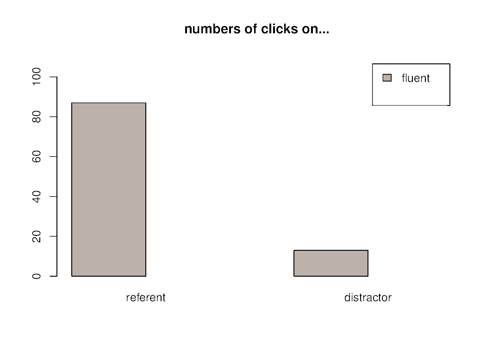

Beyond Words
Human Speech
Psychology, PPLS
University of Edinburgh
2025-02-24
Say Uh…
Feeling of Another’s Knowing
recordings of answers to general knowledge Qs
answers and nonanswers
answer: do you think this was the correct answer to the question?
nonanswer: how likely do you think this person would be to recgonise the correct answer to this question on a multiple choice test?
Feeling of Another’s Knowing
Brennan & Williams (1995)
Judging Others
- people better at guessing whether speaker knows answer with access to visual and auditory channels
Swerts & Krahmer (2005)
If You Say Um, You’re Lying

click on treasure location (speaker may be lying)

Results
Loy et al. (2017)

Real-Time Interpretation
Dialogue Game
Dialogue Game
Sample Utterances
| category | example |
|---|---|
| pause | behind um the banana that’s not peeled |
| behind the camel with (0.32) two humps | |
| repetition | behind the- the cut cake |
| repair | the money is th- behind the one with the big tail fin |
| behind the necklace which has beads coming- falling off it | |
| behind the open- more open book | |
| prolongation | behind thee leaf that looks like the ace on a pack of cards |
Results
Loy et al. (2018)
| predictor | speaker veracity | guesser response |
|---|---|---|
| pauses | 0.61 | 0.79 |
| repetitions | 0.27 | 0.33 |
| repairs | 0.56 | 0.64 |
| prolongations | 0.43 | 0.36 |
| speech rate | 0.43 | 0.33 |
listeners’ judgements are highly predictable, but not particularly accurate
What About Um, Hedging
Yesterday, you pitched an idea to a group of five persons. Today, you ask Bob (who was in the group) what people thought of your idea. Bob stays silent for a few seconds. Then he replies: “Some people hated your idea.”
Bonnefon et al. (2015)
some usually means “some but not all”
some can mean “some and maybe all”
Who Ate All The Crackers?
- speakers interviewed after “being left alone in a room with some snacks”
I ate [uh] some crackers
- click on the image which shows the remaining quantity
Results
Loy et al. (2019)
Results
Loy et al. (2019)
Reducing Some
- mousetracking, online
how many As did you get for your psychology modules?
- click on the image which shows the real situation of the interviewee

Results
| one-tick | two-tick | four-tick | all-tick | |
|---|---|---|---|---|
| disfluent | 148 | 688 | 45 | 0 |
| fluent | 67 | 724 | 78 | 1 |
- people much more likely to accept some as meaning one(!) following disfluency
Li et al. (2025)
Li et al. (2025)